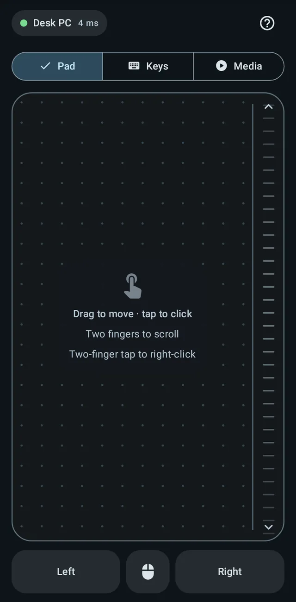

A trackpad that behaves like one
Tap to click, two fingers to scroll, tap and drag to select, press and hold for a right click, three fingers for a middle click. The pad shows what it understood, so you learn it by using it.
- Momentum scrolling, plus a scroll strip for one finger
- Real mouse buttons that you can hold while you drag
- Pointer speed and four acceleration curves, with a pad in the settings to try them on
